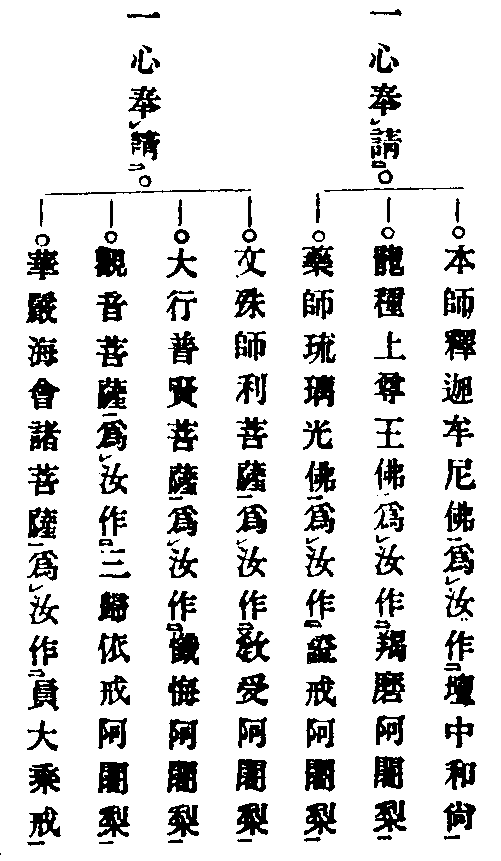
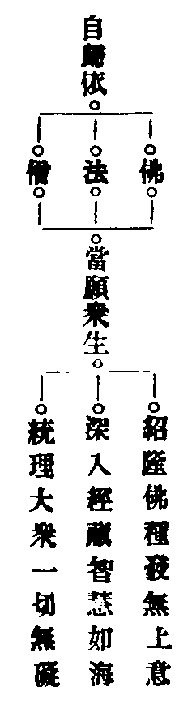

高峰龍泉院因師集賢語錄卷之九
諸般佛事門
散花文
切以風恬籟悄。斗轉星移。乃聖賢降鑒之時。正凡庶投誠之際。道場冰潔。法侶雲臻。宜散天花恭陳佛寶。是花也。善根種植。心地[栽-木+土]培。發生不假於陽春。開謝無關於造化。擷群蕚於金盤之內冷艶無塵。剪輕綃於玉指之端清香遍界。巧踰地產。妙奪天工。帝釋散處而葉葉真如。達磨傳來而枝枝般若。詩客巧思吟不就。畫工移筆寫難成。只今信手拈來。便好當場散献。供養佛法僧三寶。普資天地水萬靈。我等虔誠傳花說偈。 偈曰
春來百卉號為王 雨後東籬分外香
冷淡水邊藏臘色 娑婆月裏占秋光
武陵曾發千株艶 太華今開十丈芳
一種靈苗非北苑 都來此地助敷揚
保安
佳人機巧奪天工 剪出奇花有異同
今對聖前勤捧獻 更祈福壽永無窮
祈嗣
佳人妙手奪天機 裁剪芳英分外奇
捧向佛前陳至懇 願求吉夢應熊羆
還願
還思恩滿願心圓 剪緣裁紅献法筵
惟願慈悲垂攝受 從今福慶永綿綿
保胎
此花渾不假[栽-木+土]培 無雨無風自在開
捧献金仙求福利 願祈胎甲永無災
乞巧
是花非假亦非真 掌上擎來別是春
奉献法王何所願 心工妙巧付當人
懺髮
年來絲髮未如心 切慮生前值業因
細剪奇花求懺雪 雲鬟靄靄鎮長春
祈蠶
農桑天下最為先 蠶養將祈十倍全
須仗献花諸佛力 吉祥如意是絲綿
薦亡
非桃非李自然鮮 清淨還同火裏蓮
此夜此時親献佛 願祈滯魂早生天
薦亡
此花不與眾花同 心地[栽-木+土]培造化工
散向人天資逝魄 早生九品紫蓮中
奉道
持花昔日献燃燈 無上菩提果自圓
是夜筵前親献佛 願求早悟性中天
放生文
一大因緣切忌無風起浪。三乘教法何妨接物利生。開諸佛方便之門。廣三界慈悲之路。或現心燈開暗昧。或垂法雨潤焦枯。能令大地變黃金。解使眾生成正覺。切念黑蟆蚯蚓頂佩圓光。蟻子蚊蟲胸題卍字。鳥雀鳩鴪不虧七號之名。龜鼈蛇蜻盡有六通之分。十千天子本是魚身。五千聖僧曾為鹿眾。蜂蟻有君臣之義。虎豹共父子之仁。螺螄猶解護經。鴝鵒尚知念佛。所以經云。一切眾生皆有佛性。且說畜生在世。皆曾曩劫為人。心地昏蒙。意根愚魯。不信戒定慧。常輕佛法僧。沉埋四大六根。造作十惡五逆。恃富貴則輕欺良善。逞豪強則壓伏卑微。貪花則謾逞風流。嗜酒則恣行侮慢。見物爭為自物。殺生願祝長生。或負命欠財。或妄言綺語。出罵詈則毒如刀劒。行嫉妬則害似豺狼。罔聖欺賢附上剝下。只見眼前快活。爭知身後沉淪。一朝頑福俄終。前日業緣隨至。長劫纔離地獄。這回失却人身。或被羽毛。或披鱗甲。或化生於月林煙隴。或管攝於水府龍庭。以肉供人。用命還債。活遭剉斬生上刀砧。受此灾迍。深可憐愍。是日即有某人伏為某事。念汝物類將詣死場。不惜家財為贖汝命放令歸去。便好改往修來。仍為贊揚。一任超生脫死。化湯火作清凉之境。移烹炮為安樂之邦。捨四生以悟無生。離六道以歸大道。又慮汝等人身既失性地難明。乍聞三寶洪名。恐致一心驚怖。我佛如來有離怖畏陀羅尼。為汝稱誦。汝等靈類志心諦聽志心聽受。
南無啅計吒 吒囉啅計盧 訶哩摩訶盧 訶哩阿囉多 囉遮囉娑訶(三遍)
上來離怖畏真言稱說已竟。想汝離諸怖畏。得正定心。今為請佛作大證明。汝等志心同生歸向。
(唱)弟子(某甲)等合道場人稽首和南。

上來為汝等恭請諸佛菩薩作大證明已竟。更為汝諸靈類等懺悔多生罪垢累劫冤愆。夫懺悔者為人父母。為人眼目。為人導師。已作罪業不敢覆藏。未作罪業悔不復作。諸靈類等六道門深三塗路遠。幸逢聖會。喜遇善緣。纔聞對佛宣揚。便好傾心聽受。絕諸戲論。斷汝邪思。各願歸依早求出離。此宵蹉過。後日難逢。可以歸命投誠志心聽受。
(唱)諸靈類等。合道場人自從無始已來至于今生。今生已來至于今夜。身業不善行殺盜婬。口業不善兩舌妄言。意業不善貪嗔邪見。飲酒食肉惱亂眾生。不信佛經不孝父母。不發慈悲不行方便。自作教他見聞隨喜。如是等罪無量無邊。今夜今時對佛法僧前發露懺悔。願罪消滅(三遍)。
上來為汝等懺悔已竟。更為汝等稱說決定破惡業陀羅尼。可以志心諦聽志心聽受。
唵 嚩日囉 羯麼 尾成駄野 薩囉嚩 拏[寧*頁]沒駄 薩底曳曩 三麼曳 吽(三遍)
上來為諸靈類等稱說決定破惡業陀羅尼已竟。切慮汝等尚有冤家。結業牢固未得解脫致招此報。准我佛如來有解冤結陀羅尼。今為汝稱說。汝等志心諦聽志心聽受。
唵 三多囉 佉多囉 娑婆訶
上來為汝諸靈類等稱說解冤結陀羅尼已竟。更有淨三業陀羅尼。今為汝等稱說。可以合掌志心諦聽志心聽受。
此是第一遍稱說。更有第二遍。可以合掌志心諦聽志心聽受(真言同前)。
此是第二遍稱說。若到第三遍聲絕之時。正是汝等背覺合塵。可以志心諦聽志心聽受(真言同前)。此是第三遍稱說。汝等聞此呪聲。便覺業除心淨。見本來之面目。悟向上之宗乘。今更為汝等發四弘誓願。一切菩薩因此明心。十方如來因此成佛。可以志心諦聽志心聽受。
(唱)煩惱無邊誓願斷 眾生無邊誓願度
法門無邊誓願學 佛道無邊誓願成
上來為汝諸靈類等發四弘誓願已竟。准金光明經中云。流水長者子為十千魚說十二因緣法。然後稱寶勝如來名號。其十千魚同日命終生于天宮。為十千天子。其利不少。今亦為汝稱說。可以志心諦聽志心聽受。
無明緣行。行緣識。識緣名色。名色緣六入。六入緣觸。觸緣受。受緣愛。愛緣取。取緣有。有緣生。生緣老死憂悲苦惱。無明滅則行滅。行滅則識滅。識滅則名色滅。名色滅則六入滅。六入滅則觸滅。觸滅則受滅。受滅則愛滅。愛滅則取滅。取滅則有滅。有滅則生滅。生滅則老死憂悲苦惱滅。
此是十二因緣法。今更為汝稱說七寶如來名號。可以志心諦聽志心聽受。
(唱)南無多寶如來 南無寶勝如來
南無妙色身如來 南無廣愽身如來
南無離怖畏如來 南無甘露王如來
南無阿彌陀如來(已上各三遍)
上來為汝諸靈類等稱說十二因緣法并七寶如來名號。更有三寶之名難可得見。難可得聞。一歷耳根塵沙罪滅。可以志心諦聽志心聽受。
上來為汝諸靈類等再三稱說佛陀耶是其佛。一入於耳不墮地獄道。達磨耶是其法。一入於耳不墮餓鬼道。僧伽耶是其僧。一入於耳不墮畜生道。
(唱)歸依佛無上尊 歸依法離欲尊
歸依僧眾中尊(已上各三遍)
從今已往稱佛為師。稱法為師。稱僧為師。更莫歸依邪魔外道。唯願如來攝受護念。慈愍故(三稱)。
(唱)歸依佛竟 歸依法竟 歸依僧竟(各三遍)
上來為汝諸靈類等稱說三寶名號。便是三歸依戒。更有三昧耶戒。其戒者是過去諸佛已說。未來諸佛當說。現在諸佛今說。功德無量不可思議。一歷耳根河沙罪滅。可以志心諦聽志心聽受。
唵 三昧耶 薩怛梵(三遍)
上來為汝靈類等請佛證明。懺悔罪根。發四弘願。受三歸依戒。其戒具足。各願出輪色身。頓悟法身。業果飜成佛果。三途永脫。六道遠離。了明向上家風。證悟無生法忍。合道場眾俱獲正因。遍法界心同登正覺。

遣舡文(津送瘟部神)
仰啟都天聖者瘟部靈通莫不多權。鬼眾盛集。瘟兵受紫微金闕之符。奉太上玉皇之敕。巡遊世界檢察人間。除滅惡心顯揚善事。布威風而瘟風慓慓喜怒片時。扇殺氣而毒氣雄雄昇沉須刻。神通有感。變化無窮。現千種之儀刑。作百般之氣候。逢善男子而合掌擎拳賜祥賜福。遇惡心人而起嗔生怒降禍降災。伏願王乘玉輦神跨珠琮。展紅旗而後擁瘟兵。持白刃而前排猛。將収瘟氣而變瑞氣。攝瘟風而作祥風。依遵我佛遺言。悉赴良宵法會。信士虔誠献上一巡神酒。人間花果表世上之慇懃。法食銀錢展凡情之珍重。献上二巡神酒。凡夫漏滴可量神仙。肉眼愚蒙難期飽滿。献上三巡神酒。一心禱叩。三禮云終。于日即有(某甲)修崇勝會。敷設法筵。特備花船專伸酌送。其舡者良工製造。巧匠嚴裝。鳳舸龍舟。虎頭豹尾。內載千年粮料。外敷萬頃波濤。任意遨遊於四海。從心通達於五湖。留恩賜福而改禍為祥。庇祐埀休而變凶作吉。收瘟攝毒盡上龍舟。動鼓開旗各歸元道。
(唱)大聖歡喜藏菩薩。
(偈)五方遊邏鬼王僚 百怪精靈為禍妖
香篆導迎賢孽眾 花舡津送耗神橈
紅旗閃閃隨江浪 畫鼓喧喧趂海潮
聖者収瘟齊攝毒 兒郎撥棹盡逍遙
高峰龍泉院因師集賢語錄卷之九